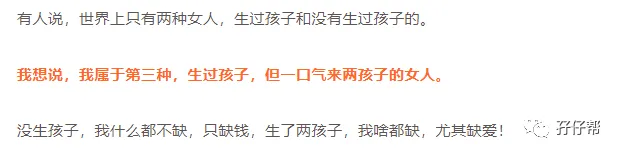
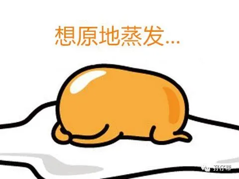

文|圆圈妈，一个文思如尿崩的双胎妈妈
图|来自网络，如有侵权，请联系删除
· 正 · 文 · 来 · 啦 ·
不久前
我在一篇推文
《领了吗？双胞胎妈妈的5个特权，很高级的那种哦》
提到一句话，
引起部分妈妈极大的“不满”
好吧
今天我想再补充下
其实呢，还有
第四种女人和第五种女人
二胎来了双胞胎的妈妈属于第四种女人。
至于第五种女人，
那就是一胎双胞胎，二胎再来双胞胎。
别惊讶，快把下巴捡回来！
还真的有这么一回事！
【孖仔帮】公众号，
有快一年了，在此期间，
我有幸接触到跟我一样“遭遇”
但不一样“待遇”的双胞胎家庭，
有头胎来了双胞胎，
二胎来了双胞胎，
甚至三胎来了双胞胎。
比如这位双胞胎妈妈，
她的双胎孕育经历
真的彻底颠覆了我对人类生儿育女的认知。
她申请加入双胞胎孕期群时，
给我留言如是说：
「孕两对双胎，一对女儿，肚里一对儿子」
是的！
我没看错，2+2=4！
太牛逼了吧！
她居然做了一件
我一直觊觎已久但又贼心没贼胆的事情，
一胎双胎，
二胎居然还有勇气再生，
而且又是一对双胞胎，
居然还有仙气选择
继！续！生！
我把截图分享到朋友圈，
果然炸锅了！
截取部分留言，
感受下吃瓜群众的反应
如图所示
<< 滑动查看下一张图片 >>
如图所示
<< 滑动查看下一张图片 >>
#后来剧情发生了逆转#
这位宝妈在朋友圈留言到：
实际情况是
头胎儿子，
二胎双胞胎女儿，
三胎双胞胎儿子。
OH,MY GOD！
我彻底ORZ了！
不扶墙，就服你！
这到底是谁给的勇气？
三胎来了双胞胎，居然还敢要！
而且前提是，
已经有一儿两女的情况下。
要是我算得没错的话，
她的双胞胎家庭应该是这种模式：
1+2+2=5
是的，我没算错！
的确是1+2+2=5！
OK，请允许我原地蒸发下！
当圆圈终于可以“独立自主”一起玩耍时
（不需要我陪）
经常有人问我，还生吗？
今年过年回去队友老家，
突然来了一群老爷爷老奶奶
给我做关于二胎的思想工作。
反正，意思很明显啦
就是宣布：
二胎可以生了！请准备下！
...#..&..@...
这群多么可爱的“老顽童”
真觉得生孩子就是母鸡下蛋那么简单吗？
说到生二胎，你以为我不想吗？
每当我带着圆圈兄弟出门，
那些路人同情的目光，
我就想打人！
偶尔还飘来一句很冒昧的话：
「哎呀，两儿子，以后有的是苦头吃」
我真想扑上去撕烂那人的嘴！
（为了言传身教，忍住了！）
于是，「拼二胎，生女儿」
一度成为我嘴里每个季度的爆款词汇！
生孩子，还不简单，
大不了肚子再来一刀，
割开7层就是了，
问题是怎么养？
好吧，怎么养也是其次，
钱能搞定的事情，
基本上也不算大问题。
我最担心的是
万一二胎再来个双蛋黄，而且又是雄性的！
老衲可如何是好！？
还要不要？
还生不生？
某天心血来潮，在Google上搜一搜：
「已经生过双胞胎，下一胎再来一对的概率有多大」
于是，我得到这样的回答：
自然受孕的情况下，
生两对双胞胎的情况非常罕见，
但也不是不可能，
概率大概是千分之三。
千分之三是个什么概念呢？
相当于，
在一个电闪雷鸣，风雨交加的夜晚，
在大马路上散步，
你被雷劈了！
有研究表明，
若是之前生过双胞胎，
再次生育双胞胎的几率
比没有双胞胎生育经历的女人大很多。
除此之外，
若你有以下6种情况，
你“被雷劈”（再来一个双蛋黄）的几率
会更大
•年纪超过35岁，因为在你进入更年期前的几年内，你的卵巢开始一次释放多个卵子。
•进行某种生育治疗，如体外受精或生育药物。这些东西可以刺激你的身体反复产生多个卵子。
•有双胞胎基因，这个你懂得啦！有一次必定会有第二次，只是概率的问题。
•服用避孕药，避孕药对女性产生的激素变化可以增加患双胞胎的机会。
•比一般女人更高或更重，较高和较重的女性患双胞胎的机会大于正常。
•队友的饮食中含有大量的锌。锌有助于产生健康的精子，精子更健康，你就有更多的机会怀上双胞胎！
以上资料由圆圈妈翻译整理，原文出处链接如下：
https://www.twinstuff.com/chances-of-having-twins-twice/
综上所述
今儿，我就把话撂这了！
宁愿被雷劈，也不要二胎再来两儿子！
各位“元芳们”呢？你们怎么看？
投票告诉我呗！
假设政策开放三胎，
给你一万个胆子去生，
一胎是双胞胎，二胎再来双胞胎，
你还敢要吗？
#请选择#
A：不要，打死我都不会要
B：要！干嘛不要？
C：纠结！
D:这是一道送命题！
#理由呢#
（............）
别慌！只是假设，不是真的！
请淡定拿起手机，
挥一挥手指头，
在留言区说出你的选择和理由吧！
-END-
一好文推荐一
一加入社群一
一关注孖仔帮一
点击“阅读原文”，直达双胞胎育儿网站www.sgguy.com.
你“在看”吗？点一下呗！☟☟☟


